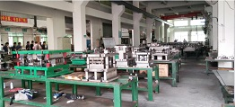

Metal Stamping Dies
VITO provides turnkey tool services, from concept development through tool completion, using advanced technology and systems. Tool & Die designs, tests and manufactures metal stamping dies using innovative, cost-effective engineering solutions for medium to large complex tooling systems. Our manufacturing capabilities include the production of progressive dies, transfer dies, line dies and more. Custom stamping dies can be created for various applications in industries such as automotive and aerospace.
* Progressive Dies are used in higher-volume production and are designed to operate at high rates of speed, Several different processes may be incorporated within a single die, for example: blanking, bending, punching, piercing, tapping, embossing, curling, knurling, and deep drawing.
* Transfer Dies are used in high-volume manufacturing for round, deep-drawn, and medium-to-large parts.
* Line Dies are used for low-volume parts and to manufacture large parts that cannot be efficiently manufactured in one press.
* Die Repair - VITO provides expert repair, revision and maintenance for metal stamping tooling systems. We can repair tooling as needed -- preventing lost-part production, non-value-added secondary operations and late-parts delivery. Any of these conditions waste valuable resources and raise part costs.
Our repair and engineering change capabilities include:
Sharpening and reconditioning – To ensure the production of quality parts and preventive maintenance of tooling
Component replacement – To replace a broken die component quickly and effectively, using customer component design data or reverse engineering.
Die changes – To re-manufacture a die to customer specifications when a change is required
Quality work – To make a repair accurately the first time, in keeping with our industry-leading quality standards
Quick turnaround – To make rapid, effective die repair and engineering changes
VITO manufactures high-quality, reliable and cost-effective Tool & Dies for the automotive, appliance, office furniture, and aerospace industries. We have the expertise and technology to design, test and manufacture progressive tools that meet a broad range of manufacturing challenges. We have expertise in developing innovative tooling solutions for an array of part materials: high-strength steel, stainless steel and aluminum.